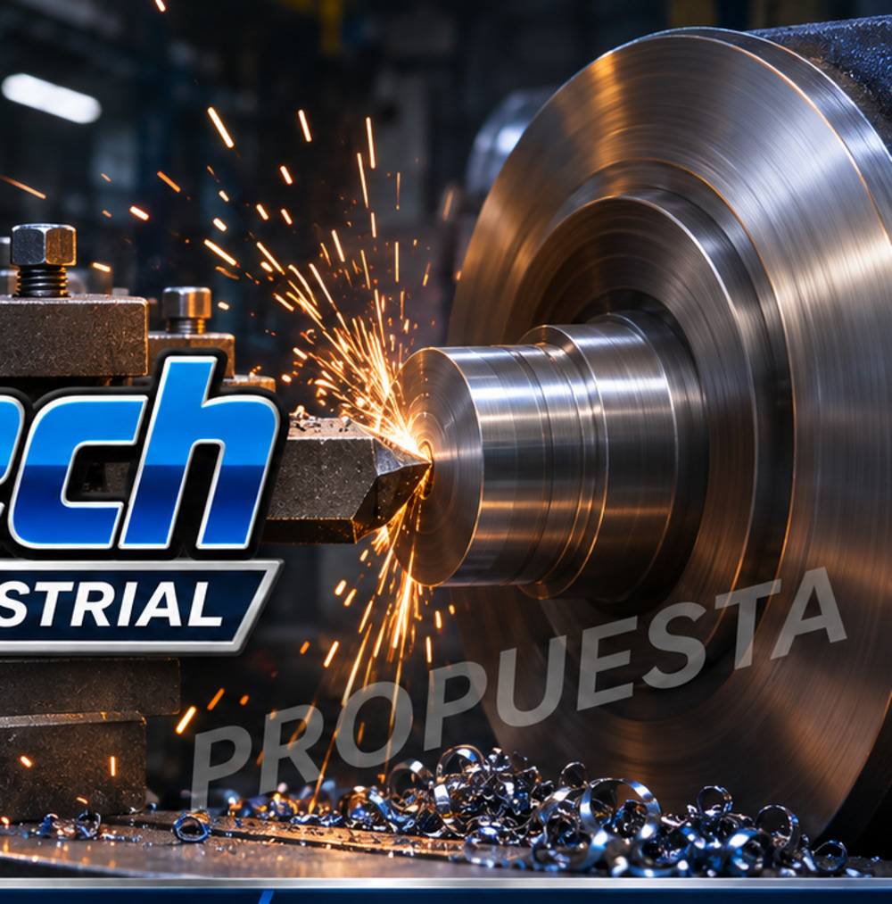

01
Mantenimiento industrial
Trabajos orientados al mantenimiento de maquinaria y equipos industriales.
Mantenimiento industrial y fabricación de piezas mecánicas a medida. Servicios de torno, fresadora, piñones y soldaduras especiales según las necesidades de cada cliente.
Trabajos de mantenimiento y fabricación de componentes mecánicos de acuerdo con los requerimientos de cada proyecto.
Trabajos orientados al mantenimiento de maquinaria y equipos industriales.
Fabricación de piezas mecánicas según las necesidades y especificaciones del cliente.
Trabajos de torneado para la fabricación de componentes mecánicos.
Elaboración de piñones para aplicaciones mecánicas.
Servicios de soldadura para requerimientos industriales específicos.
Trabajos de mecanizado mediante fresadora para piezas y componentes.
Una mirada visual a los procesos de mecanizado y las soluciones industriales. Explora nuestra galería y conoce los servicios disponibles.

Mecanizado industrialVer galería de imágenesPiezas a medidaConocer serviciosTu próximo proyectoSolicitar cotizaciónLas imágenes son ilustrativas. Próximamente se incorporarán fotografías de trabajos reales de CI InduTech.
CI InduTech es una empresa dedicada al mantenimiento industrial y a la fabricación de piezas mecánicas a medida. Ofrecemos servicios de torno, fresadora, fabricación de piñones y soldaduras especiales.
Escríbenos por WhatsApp para consultar sobre un trabajo o solicitar información.